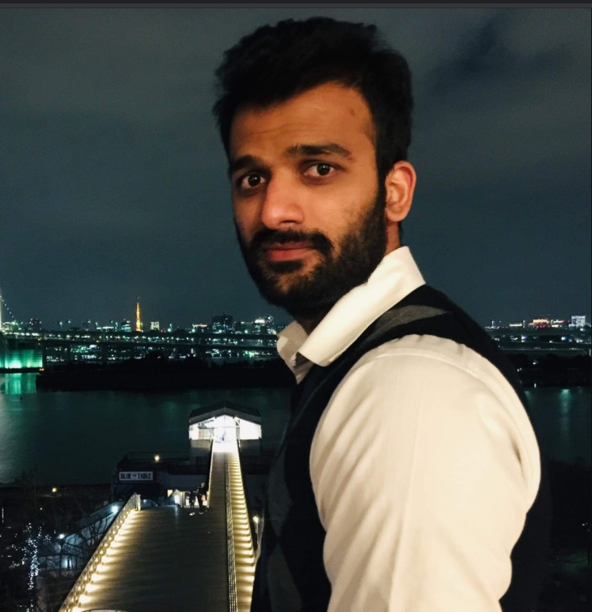

Dr. R Sai Chandra Teja received the B.Tech. Degree in Electronics & Communications Engineering from
Jawaharlal Nehru Technological University Anantapur, Pulivendula, India in 2010, the MTech Degree in
Microelectronics & VLSI from IIT Hyderabad, India, in 2012, and a Ph.D. Degree at Osaka University,
Osaka, Japan in 2020.
In 2016, he joined the Center for Semiconductor Research and Development, Toshiba Corporation, Kawasaki,
Japan as a researcher, where he was engaged in the development of MIPI M-PHY specification Verification
IP.In 2017, he moved to Institute of Memory Technology, System Technology R&D Center, KIOXIA Corporation
(Previously Toshiba Memory Corporation),where he continued to work on solid-state drive SSD reliability
and machine learning algorithm strategies for nonvolatile storage technologies. He has 20+ international
conferences and journal publications. Being an idea hamster, Since 2020 he is on an entrepreneurship journey
building Society 5.0 Technologies.